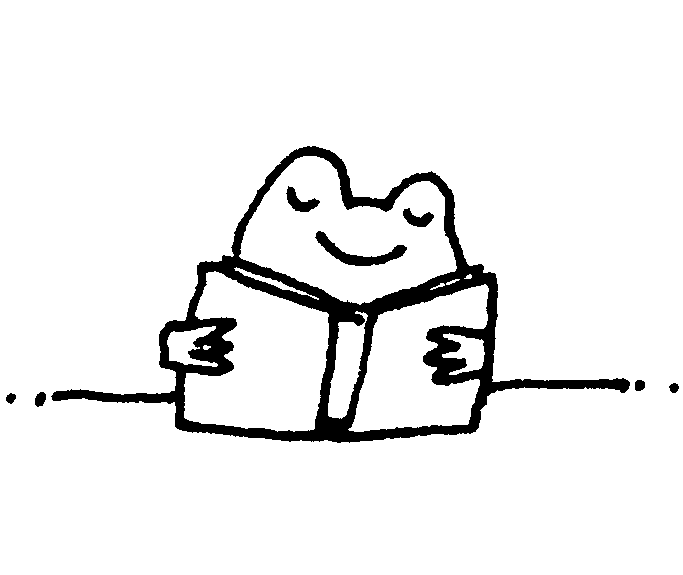
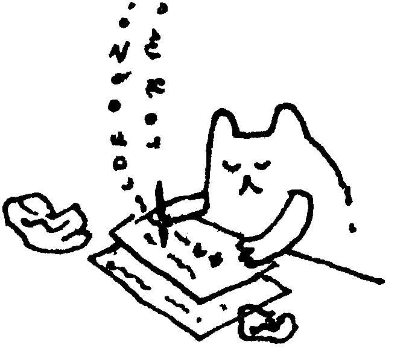

Самоток
ИГРА №1
Давайте представим мир в котором неожиданно исчезли все издательства, типографии и книжные магазины. В общем всё что связано с распространением книг. Остались только авторы и читатели.
КАК ЖЕ БЫТЬ?

– неужели я теперь не увижу продолжение моей любимой истории?!

– куда я буду девать мои книги, когда закончится место в столе?!
Придется всё делать самостоятельно
Если вы играете за читателя
вам понадобятся:
- • компьютер и принтер
- • макетный нож, металлическая линейка и коврик для резки
ваши задачи:
- • выбрать книжку (или календарь) на странице ниже
- • скачать подготовленный к печати PDF-файл
- • распечатать его, вырезать и собрать книжку
- • отправить автору авторский гонорар
- • приступить к чтению и изучению картинок